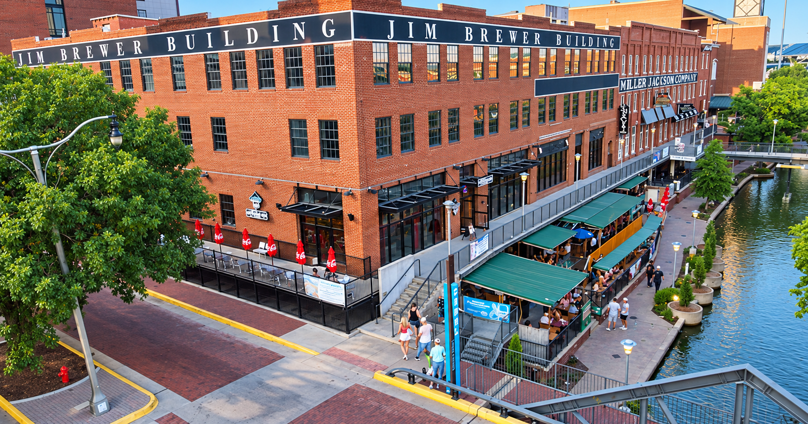
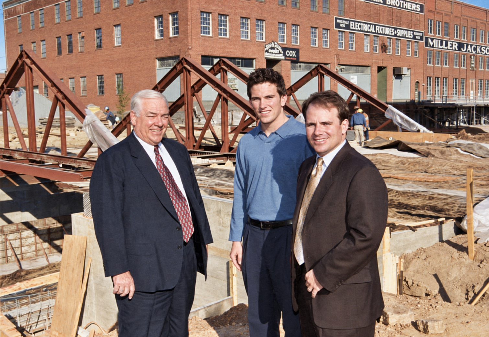
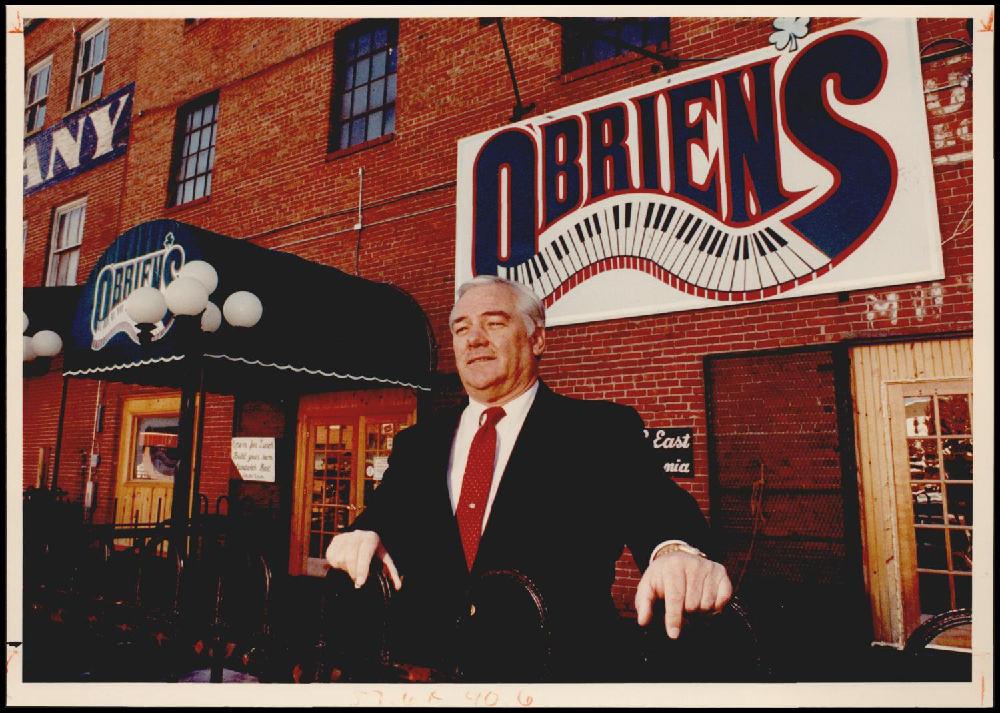
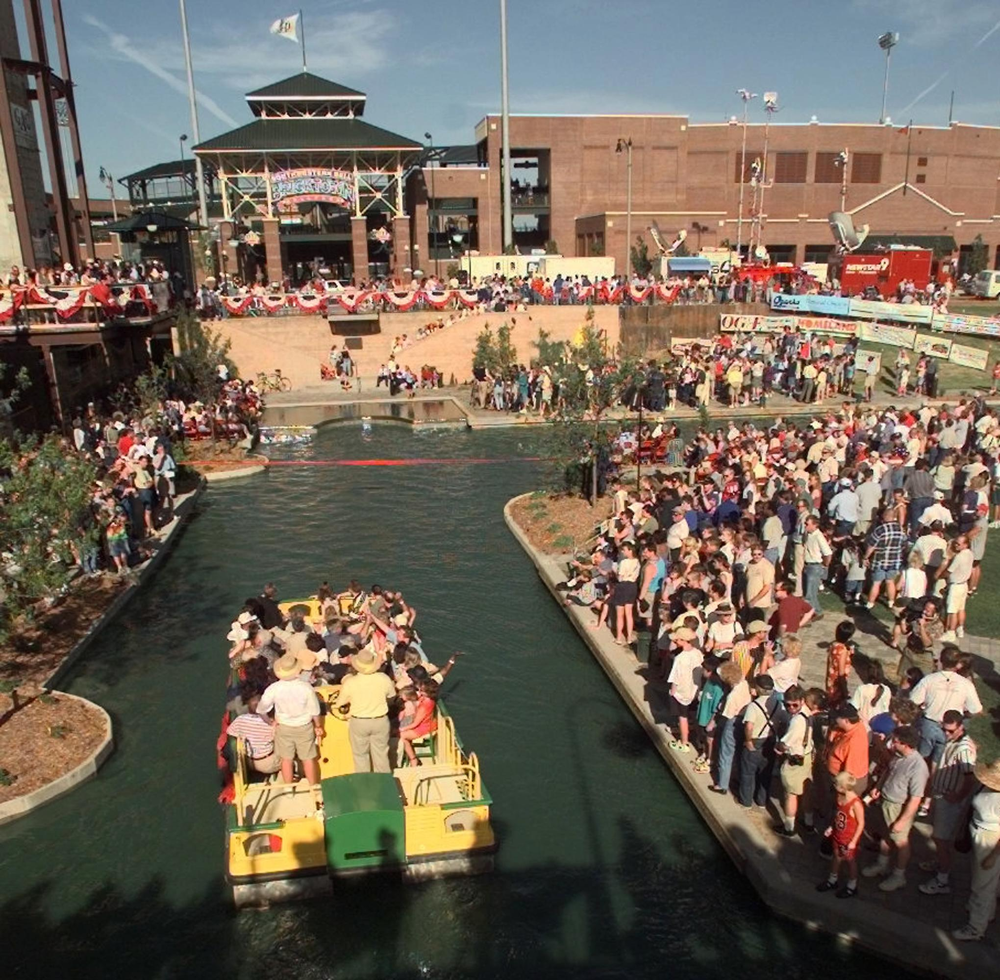
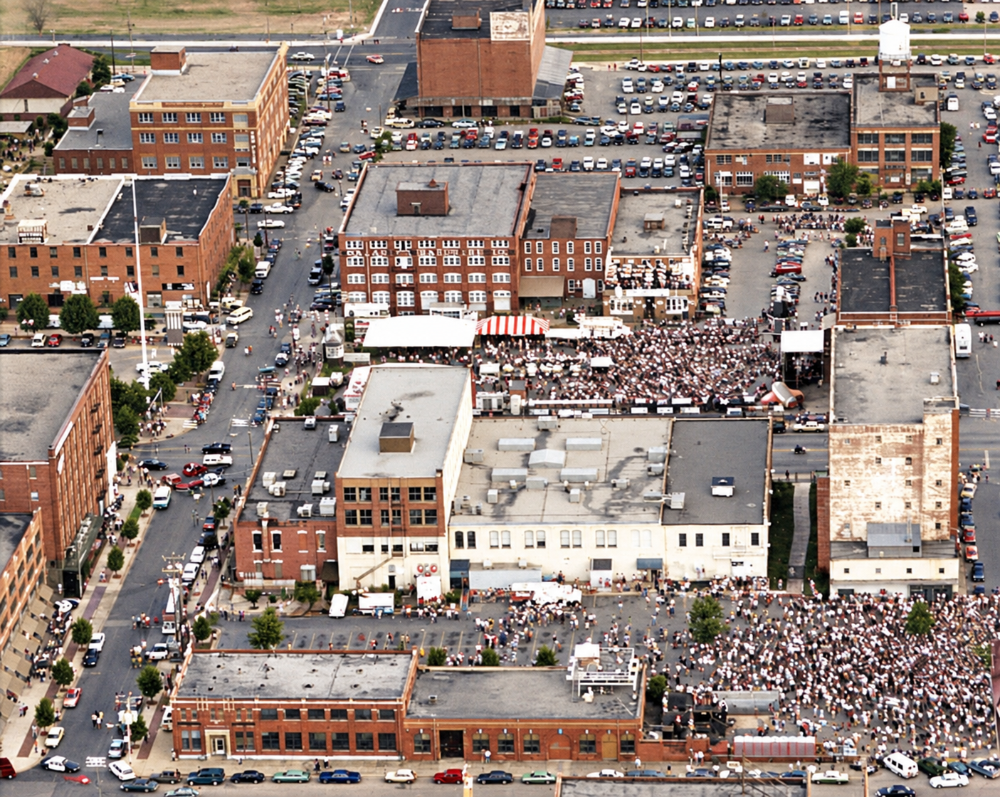
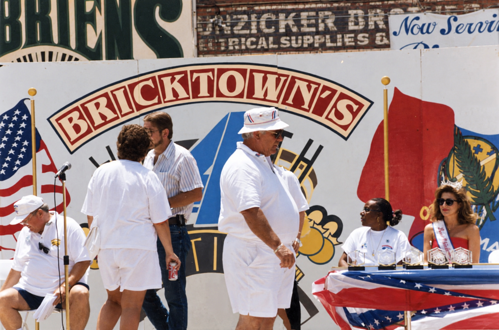
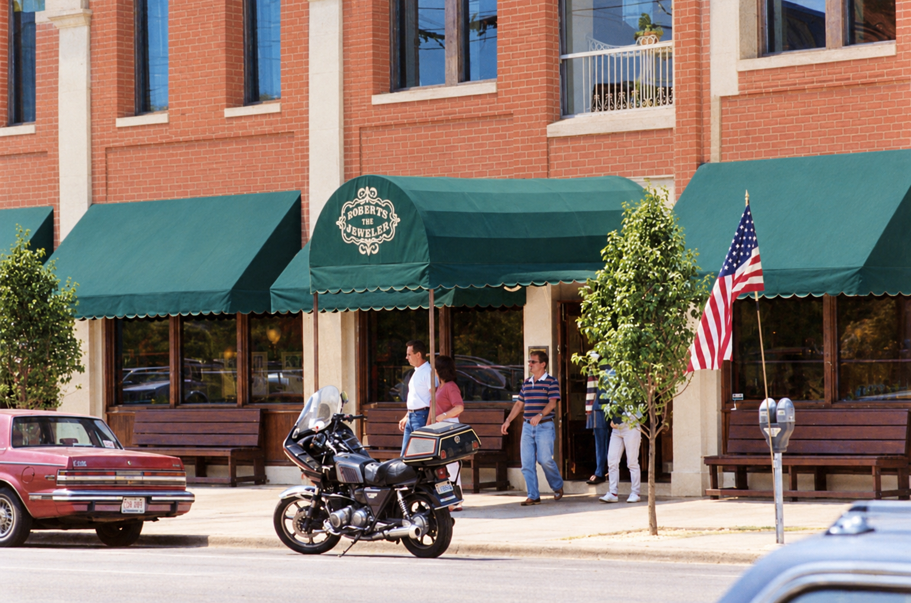
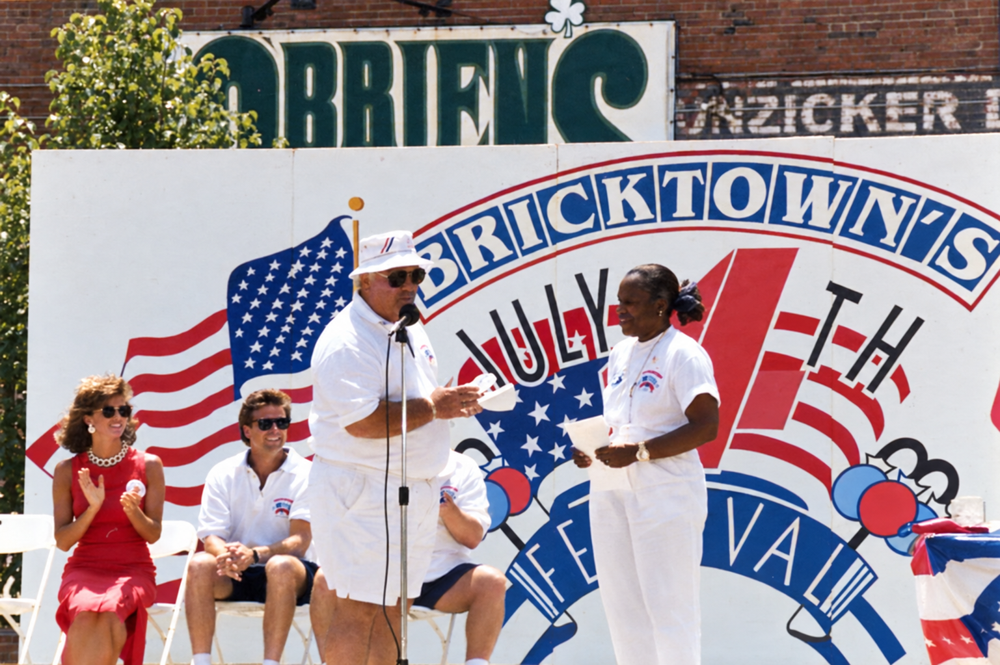

1985
A warehouse becomes a destination
Jim Brewer opens the Bricktown Haunted Warehouse, bringing entertainment into the old warehouse district. [1]
Jim Brewer’s answering-machine greeting
Old warehouses. New possibilities. The people, places, and unforgettable nights behind the Brewer family’s Bricktown story.
Meet Jim Brewer
FEBRUARY 6, 1937 – NOVEMBER 11, 2008

Before the canal, the crowds, and the festivals, there were old warehouses—and people willing to take a chance on them.
Raised in south Oklahoma City, Jim D. Brewer worked in transmissions, nightclubs, and the oil business before investing in downtown real estate. His family’s obituary remembers an entrepreneur who helped turn overlooked buildings into a destination. [2]
Bricktown’s revival involved many people. Neal Horton’s early preservation work, followed by investors including Jim Tolbert, Don Karchmer, and Brewer, kept the district moving. Jim’s contribution centered on entertainment: giving people a reason to come downtown, and a reason to come back. [1] [3]
The Haunted Warehouse, O’Brien’s, venues, and festivals became chapters in that effort. Reporting in 2020 describes Brent and Brett carrying the family’s business forward. [4]
Jim Brewer opens the Bricktown Haunted Warehouse, bringing entertainment into the old warehouse district. [1]
Spaghetti Warehouse opens. The district’s growing appeal creates opportunities for nightlife and events. [3]
Brent Brewer recalls the pub opening and first parking-lot block party on March 17. [4]
Jim starts Brewer Entertainment Inc., building a business around venues and outdoor festivals. [5]
Jim purchases the Santa Fe Depot; renovations help prepare it for returning passenger service. [12]
Some chapters are best told in photographs.
Jim at O’Brien’s. The canal’s opening day. The crowds that brought Bricktown to life.

A familiar face outside a familiar place. Jim stands in front of the pub that became part of the family’s Bricktown story.
David McDaniel · Oklahoma Historical Society
A water taxi carries dignitaries toward the ceremonial ribbon while crowds fill the canal banks. A milestone in the district’s transformation.
The Oklahoman · Published by Bricktown OKC
An aerial view of a packed Bricktown festival. Archive entries give conflicting dates for this image, so the year remains unconfirmed.
Brewer family archive · Preserved by Retro Metro OKC ↗
A festival-stage moment outside O’Brien’s, beneath a Bricktown Fourth of July banner. The exact year is not established.
Brewer family archive · Preserved by Retro Metro OKC ↗
An archival Bricktown streetfront with Roberts the Jeweler on the awning. The exact year is unconfirmed.
Brewer family archive · Preserved by Retro Metro OKC ↗
An onstage presentation during a Bricktown Fourth of July celebration, with O’Brien’s in the background.
Brewer family archive · Preserved by Retro Metro OKC ↗Original color photographs appear alongside images from the Brewer family archive, preserved by Retro Metro OKC. Dates and credits are listed with each image. Photographs marked AI colorized use estimated colors; their original black-and-white versions remain available. Select any photograph to see it at full size.
From Jim’s early businesses to the companies and venues that helped shape Bricktown.
15 stories
A business story that began with hard work.
Before the downtown buildings and festival crowds, Jim ran Jim Dandy’s Transmissions. A 2020 Oklahoma Gazette account names the transmission business among his early ventures, alongside four nightclubs in the 1970s. It is an early chapter in the entrepreneurial path that eventually led to Bricktown. [4]
Another name behind the Bricktown years.
Oklahoma Gazette’s November 2008 remembrance identifies Jim as the owner of both Brewer Enterprises and Brewer Entertainment. Brewer Enterprises deserves its own place in the family history; the report does not establish its founding date or a separate inventory of its assets. [6]
The buildings behind the possibilities.
Downtown OKC’s board directory lists Brent Brewer with Bricktown Real Estate LLC. An earlier Greater Oklahoma City Chamber report identifies Bricktown Real Estate as the Santa Fe Depot’s owner and Brent as its president. Together, those records document another company in the family’s downtown story. [15] [16]
A venue with a chapter of its own.
The Journal Record’s 2008 remembrance lists Bricktown Live among the properties purchased and managed by Brewer Entertainment. Oklahoma Gazette also names it among the venues operated by Jim’s businesses. These are historical accounts; the exact opening and closing dates remain to be established. [5] [6]
Another place to bring people together.
Bricktown Ballroom appears in both The Journal Record and Oklahoma Gazette’s 2008 accounts of the Brewer venue portfolio. It belongs alongside Bricktown Live and the event center in the entertainment history. These sources establish the Brewer connection, while its full operating timeline remains to be documented. [5] [6]
The attraction that helped start it all.
The Haunted Warehouse gave people a reason to visit Bricktown before the canal and ballpark. Retro Metro OKC traces its origins to Jim Brewer and Craig Brown seeing possibilities in the old Hunzicker Lighting building. A 2013 Brewer Entertainment release documents its later home at the Chevy Bricktown Events Center. [1] [3] [11]
An Irish pub. A new Bricktown tradition.
In a 2020 interview, Brent Brewer recalled opening O’Brien’s on March 17, 1990, alongside the St. Patrick’s Day parade and a block party in the parking lot. He said the pub operated for seven years. The celebration outlived the venue and became part of the family’s continuing story. [4]
Turning places into experiences.
The Journal Record’s 2008 remembrance dates Brewer Entertainment Inc.’s start to 1991. At that time, it described a portfolio that included the Coca-Cola Bricktown Events Center, Bricktown Live, Bricktown Ballroom, and the Santa Fe train depot, alongside outdoor festivals. [5]
The practical side of welcoming a crowd.
Bricktown Parking belongs in the company history identified by the Brewer family. Public records also show why parking mattered to the district’s growth: the city’s 2008 parking strategy lists Jim Brewer among consulted stakeholders and Bricktown Parking Investors among contacted operators. [13]
The company’s founding date and the relationship between the differently named parking entities remain to be documented.
Fireworks, music, and a city coming together.
A 2008 Oklahoma Gazette remembrance recounts the crowds at Bricktown’s 1999 Fourth of July fireworks after the canal opened. In 2007, the Gazette separately documented Brewer Entertainment’s Red, White and Boom! on the River—a free, three-day celebration at Downtown Airpark with the Oklahoma City Philharmonic and other performers. [6] [7]
A soundtrack for summer in Bricktown.
The 2008 Gazette preview documents a two-day, free Blues & BBQ festival at Sheridan and Oklahoma avenues, with Marcia Ball, Bugs Henderson, and regional musicians. The family identifies Blues Fest as part of its history; the public account establishes the festival and lineup. [8]
An original program or company archive will help document the first year and full production credits.
A different rhythm for downtown.
The Journal Record reported in July 2014 that Brewer Entertainment had hosted Reggae Fest for 19 years. Its account describes a free event with performers including Watusi, Ugly Lion, and The Effinays, and an emphasis on bringing live entertainment to Bricktown. [9]
Two names in one venue’s story.
A 2008 account places the Coca-Cola venue within Brewer Entertainment’s operations. Songkick identifies Chevy Bricktown Event Center as formerly the Coca-Cola Bricktown Event Center. Brewer Entertainment’s 2013 announcement documents the Chevy name and a Haunted Warehouse season at the venue. [5] [10] [11]
The precise sponsorship-change date is still to be established.
Preserving a gateway to Oklahoma City.
Amtrak’s station history records Jim Brewer’s 1998 purchase of the depot and the renovation that followed. The Heartland Flyer began service in 1999. This chapter connects the family’s downtown work with the return of passenger rail to Oklahoma. [12]
A new landmark on a familiar wall.
Oklahoma Tourism records Jack Fowler’s mural on the north side of the Chevy Bricktown Events Center in late 2016. The 200-foot-wide artwork made the building part of Bricktown’s public-art landscape. [14]
Celebrations. Ambition. Disagreements. Setbacks.
The reporting that puts the family history in perspective.
Explore 43 articles and historical records, from early redevelopment coverage to festival previews, remembrances, public debates, and court opinions. Each entry links to its original source.
43 sources
KOCO
Brent Brewer calls for more funding as Bricktown grows.
Read original sourceOklahoma Gazette
Matt Dinger interviews Brent Brewer about O’Brien’s March 17, 1990 opening and the family’s St. Patrick’s Day tradition. Its 2020 event plans are a preview, not confirmation that the celebration took place.
Read original sourceKGOU
Jacob McCleland and Ted Streuli discuss the venue’s closure. The account says Levelland Productions chose not to renew its lease with property owner Brewer Entertainment; Brent Brewer was assessing the building’s future.
Read original sourceThe Lost Ogle
Patrick’s commentary examines criticism and changing responses to Jack Fowler’s octopus mural, a project supported by the Brewers and Downtown OKC Initiatives. It is included as an opinion piece, rather than an objective verdict on the artwork.
Read original sourceOklahoma Gazette
Ben Luschen previews the festival’s 21st edition and interviews Brent Brewer about its free, all-ages format and place in Bricktown’s summer calendar.
Read original sourceOklahoma Gazette
Brett Fieldcamp interviews Brent Brewer about the Haunted Warehouse’s origins, its early crowds, and the creative work behind its scares. Recollections and attendance figures are presented as the interviewee’s account.
Read original sourceThe Journal Record
Molly M. Fleming covers Brent and Brett Brewer’s building renovations honoring Jim. The article also describes debate over electronic signs and advertising rules in the historic district.
Context & outcome Renovation approval and unresolved sign questions are separate issues. The report does not establish a final denial of every Brewer sign proposal.
Read original sourceThe Journal Record
Caele Pemberton reports on Brewer Entertainment’s long-running free Reggae Fest. Alongside performers and community appeal, the account discusses weather risk and years when the event lost money.
Read original sourceBrewer Entertainment / PR.com
Brewer Entertainment announces the attraction’s 28th annual season at the Pepsi Chevy Bricktown Events Center, 425 California. This company-issued release documents the venue name and advertised season.
Read original sourceThe Journal Record
A follow-up covers federal grant funding and a reported $4.5 million depot valuation in the condemnation process. This is a dated account of that process, not a statement of the final acquisition price.
Read original sourceOklahoma Gazette
Jerry Bohnen reports on the city’s effort to acquire the Santa Fe Depot and a sharp gap between the owner’s asking price and the city’s offer. The article captures an unresolved acquisition dispute at that time.
Read original sourceOklahoma Gazette
Greg Elwell’s Festival of the Arts food coverage includes Brewer Entertainment’s brisket sales. It documents food operations at the Arts Council’s festival, rather than crediting Brewer with producing the entire event.
Read original sourceThe Journal Record
A debate over government incentives for retail development includes Brent Brewer’s support for anchor stores and cautions about public subsidies. The disagreement concerns development policy.
Read original sourceU.S. Court of Appeals, Tenth Circuit / Justia
The opinion describes an employee’s fall down an elevator shaft at the Bricktown Haunted House and the resulting suit against Brewer Entertainment. The injury suit had already settled; this appeal concerned the insurers’ responsibility for costs.
Context & outcome The court reversed summary judgment for Markel and remanded. This was an insurance-allocation decision, not a new injury judgment against Brewer Entertainment.
Read original sourceOklahoma Magazine
Lindsey Johnson explores Oklahoma City’s urban renewal and MAPS-era development. Jim Brewer’s entertainment investments appear within the larger story of downtown’s transformation.
Read original sourceAssociated Press / The Pampa News
An AP report describes a station-use agreement following locked-door incidents that required alternative arrangements for passengers. Brent Brewer said repeated requests for a new lease had gone unanswered.
Context & outcome The report documents a subsequent agreement with the state. Summary is based on indexed text of the newspaper preserved by Texas Tech’s archive.
Read original sourceOklahoma Gazette
Ben Fenwick examines a long-hidden tunnel beneath the tracks and the station’s potential as a transportation hub. Brent Brewer discusses the building as city planning work continues.
Read original sourceOklahoma Court of Civil Appeals / Justia
An insurance-coverage appeal arising from an intoxicated-driver injury case. The opinion records that claims against Brewer Entertainment and Bricktown Canal Properties were dismissed without prejudice before the underlying trial.
Context & outcome The appeal concerned coverage for a judgment against Canal Club, not a liability finding against the Brewer companies. The appellate court reversed and remanded for judgment in the insurer’s favor. Dismissal without prejudice is not a decision on the merits.
Read original sourceThe Oklahoman / Greater OKC Chamber
A Chamber-hosted newspaper report covers merchants’ discussions about Bricktown’s next phase, including plans to honor early contributors such as Neal Horton and Jim Brewer.
Read original sourceOklahoma Gazette
A remembrance of Jim Brewer’s business career and the entertainment ventures that helped bring visitors into the warehouse district.
Read original sourceOklahoma Gazette
Scott Cooper records Jim Cowan’s memories of Brewer, the merchants’ association, and major crowds at the 1999 Fourth of July celebration. It connects the events to Bricktown’s changing fortunes.
Read original sourceThe Journal Record
Remembers Jim Brewer’s investments, venues, festivals, and prominent role in Bricktown. Alongside tributes, the account describes a strong personality and disagreements with others involved in the district.
Read original sourceThe Oklahoman / Legacy
The family obituary recounts Jim’s early businesses, oil ventures, and work in Bricktown. Originally published November 12–13, 2008, it provides a family remembrance alongside independent newspaper coverage.
Read original sourceCity of Oklahoma City
The city’s parking study lists Jim Brewer among consulted stakeholders and Bricktown Parking Investors among contacted operators. It documents district parking conditions; it does not by itself establish the relationship between every similarly named parking business.
Read original sourceOklahoma Gazette
Jake Dalton previews the free Blues & BBQ event at Sheridan and Oklahoma avenues, featuring Marcia Ball, Bugs Henderson, and regional musicians. This report documents the festival and lineup; it does not establish the complete production credits.
Read original sourceThe Journal Record
Traces the station’s architecture and later uses, including Jim Brewer’s 1998 purchase, restoration, and the return of passenger service in 1999.
Read original sourceBillboard / World Radio History
The 2008 venue guide lists Brewer Entertainment with the Coca-Cola Bricktown Events Center at 425 California. This contemporaneous industry record helps document the venue’s earlier name.
Read original sourceThe Oklahoman / copy preserved on OKCTalk
A newspaper article attributed to Steve Lackmeyer describes merchants’ complaints about parking prices and control of public lots. The copied report says Jim Brewer declined comment, while the Bricktown Association argued that cheaper parking options needed better publicity.
Context & outcome The surviving copy was posted July 21, 2007; the original publisher page was not located. The city’s 2008 parking study independently identifies this article and the related discussion. This entry summarizes the attributed newspaper text, not forum replies.
Read original sourceOklahoma Gazette
C.J. Macklin previews Brewer Entertainment’s free, three-day celebration with the Oklahoma City Philharmonic and other performers. This event was at Downtown Airpark, separate from Bricktown’s earlier fireworks celebrations.
Read original sourceThe Journal Record
A property-transactions roundup reports Jim and Patsy Brewer selling a parking lot near Sheridan and Joe Carter for a proposed Bricktown Market Place development. The apartment sale in the original headline is a separate transaction.
Read original sourceThe Journal Record
Jim Brewer discusses the effect of MAPS investment and new construction. The report also describes uneven weekday activity as the entertainment district continued to develop.
Read original sourceThe Journal Record
Looks back at early investment and entertainment in Bricktown, including Jim Brewer’s involvement from 1985. It also recognizes the other developers and businesses involved in the district’s revival.
Read original sourceThe Journal Record
A preview of the train’s first-anniversary celebrations mentions Jim Brewer hosting a special luncheon. The article documents plans rather than confirming every event occurred.
Read original sourceThe Journal Record
A canal-opening-era history of the warehouse district describes Jim Brewer’s property investments during the 1980s within Bricktown’s broader redevelopment story.
Read original sourceThe Journal Record
An account of preparations for renewed passenger service, including Brewer Enterprises’ restoration work at the Santa Fe Depot.
Read original sourceThe Journal Record
Jim and Brent Brewer’s plans for the Santa Fe Depot combined passenger facilities with preservation of its Art Deco character. This is a contemporary account of the restoration effort.
Read original sourceThe Journal Record
Coverage of approved federal funding and restoration preparations at the Santa Fe Depot. Jim Brewer discussed the work needed before passenger rail service returned.
Read original sourceThe Journal Record
A brief mention places Jim Brewer on an Oklahoma City delegation to San Antonio and credits his influence on the proposed canal alignment along California Street.
Read original sourceThe Journal Record
Jim Brewer supported a proposed antique-car shuttle linking downtown parking with Bricktown. The report captures parking pressure and the push to diversify the district beyond nightlife.
Read original sourceRetro Metro OKC
A collection of photographs and district history, including family-contributed material and the work of multiple early developers. A starting point for placing the Brewer story in its wider setting.
Read original sourceWelcome to Bricktown
The district’s history page describes its warehouse origins and early entertainment attractions, including the Haunted Warehouse associated with Jim Brewer.
Read original sourceAmtrak’s Great American Stations
The station history documents the depot’s architecture, Jim Brewer’s 1998 purchase, and the return of passenger rail service in 1999.
Read original sourceTravelOK
The state tourism listing identifies Jack Fowler’s large Bricktown octopus mural. It provides a descriptive record alongside the archive’s coverage of public reactions to the artwork.
Read original sourceNo matches. Try another name or keyword, or choose All coverage.
Research updated October 9, 2026. This is a growing archive of material located, rather than a complete inventory of every publication. Summaries use accessible publisher text and indexed excerpts; some originals require a subscription. Dates refer to original publication where established. Company announcements, family remembrances, opinion, and court records are labeled separately from news reporting. Original articles remain with their publishers.
Local reporting, family remembrance, historical collections, and civic records help tell this story. Dates describe historical events; venue listings are included as historical references, rather than a guide to current operations. Family-identified chapters with incomplete public records are noted in the stories.
Have an old festival poster, a photograph, or a memory of Jim and Bricktown? Help preserve the story.